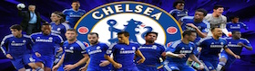

Timeline
This article documents the History of Chelsea Football Club, an English association football team based in Fulham, West London. For a general overview of the club, see Chelsea F.C.
Founded in 1905, Chelsea quickly gained a reputation for signing big name players and for attracting large crowds, but failed to win a major trophy in their first fifty years. They spent thirty of their first forty seasons in the First Division, although often found themselves finishing in mid-table or battling relegation. The closest Chelsea came to success was in the FA Cup; they were runners-up in 1915 and losing semi-finalists in 1911, 1920, 1932, 1950 and 1952. The duck was finally broken by manager Ted Drake, who introduced a series of changes at the club and led Chelsea to the League Championship in 1955.
The 1963–72 seasons saw Chelsea regularly challenge for honours for the first time, although they often narrowly missed out. The League Cup was won in 1965, the FA Cup in 1970 and the UEFA Cup Winners' Cup in 1971; they were also FA Cup runners-up in 1967 and League Cup runners-up in 1972. Several problems over the next decade, principally the debt burden caused by an ambitious attempt to redevelop Stamford Bridge, brought the club to the brink of extinction, before a revival under John Neal in the mid-1980s saw the club win the Second Division title and ultimately re-establish itself in the top flight.
A further revival under managers Ruud Gullit and Gianluca Vialli from 1996 to 2000 saw Chelsea win the FA Cup in 1997 and 2000, the League Cup and UEFA Cup Winners' Cup in 1998, and qualify for the Champions League for the first time; the club have not finished outside of the top six in the Premier League since the 1995–96 season. In 2003, Chelsea were bought by Russian billionaire Roman Abramovich, ushering in the club's current phase of success. José Mourinho led them to two league titles, an FA Cup and two League Cups in three seasons. The club added a further FA Cup in 2009, and then their first League and FA Cup "Double" in 2010. Under the stewardship of former player Roberto Di Matteo, the club won a seventh FA Cup in 2012, before going on to win its first UEFA Champions League title.